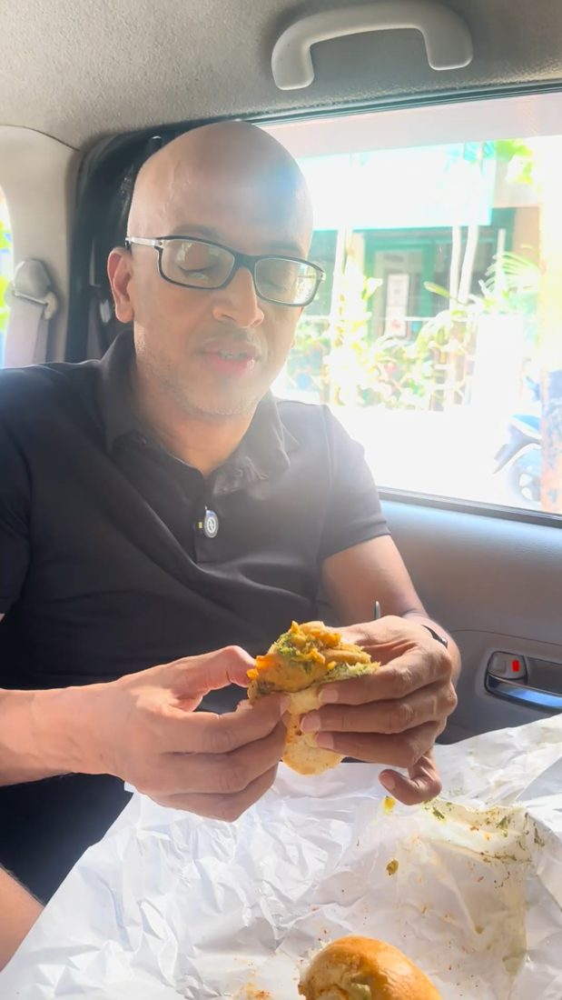
Sir tries Ashok Vada Pav
Behind the scenes as Sir tastes the city's most famous vada pav.
SSEI team trip · 27 Sep to 2 Oct 2026
We went to Mumbai to meet our students there, record conversations with some of the city's top fund managers, shoot a season's worth of content and line up the groundwork for outdoor ads and PR. This page sums up what we did, where we went and what comes next.
Where we went
We stayed in Santacruz and worked outwards. Each pin is a place where we shot, scouted or met people.
The student meetup
The meetup was the centre of the trip. More than 65 students came, along with 10 of our alumni, and the conversations ran for over four hours. Nobody was in a hurry to leave, and that tells us more than any feedback form could.
We promoted it ahead of time and got close to 200 sign-ups, with 150 people confirming they would come. Every one of those leads is now with the sales team. We can follow up with them directly, retarget them in ads and invite them to our next Mumbai event.
Two of the videos below came out of this evening: students talking with Sir, and alumni talking about what learning with him was like.
About 1 in 3 people who signed up came in person. All 200 leads have gone to sales.
Podcasts
We recorded four long-form podcasts with leaders from Mumbai's fund houses. We're now going through the footage and talking to editors.
Leadership will get the edit and rollout plan: how each episode gets cut, what clips come out of it and when it all goes live.
Videos
We shot for Sir's profile, for FinLab and for SSEI. A few are already live. The rest are being edited and will go out over the coming weeks.

Behind the scenes as Sir tastes the city's most famous vada pav.
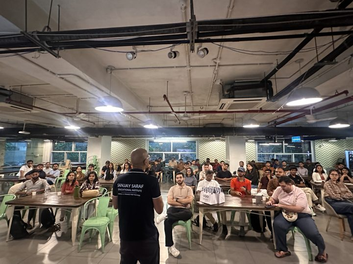
Moments from the meetup as students put their questions to Sir.
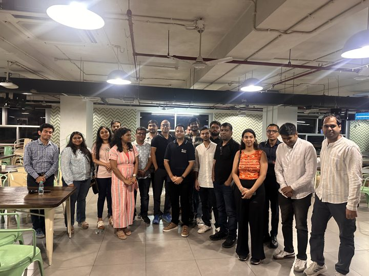
Our alumni talk about what Sir's classes meant to them.
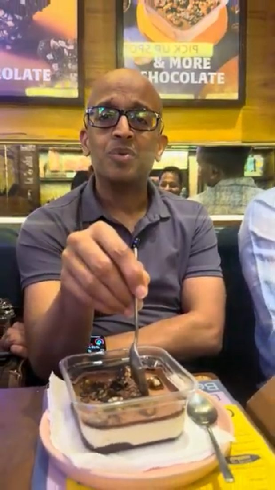
At Bombay Sweet Shop, on how old favourites are being reinvented.
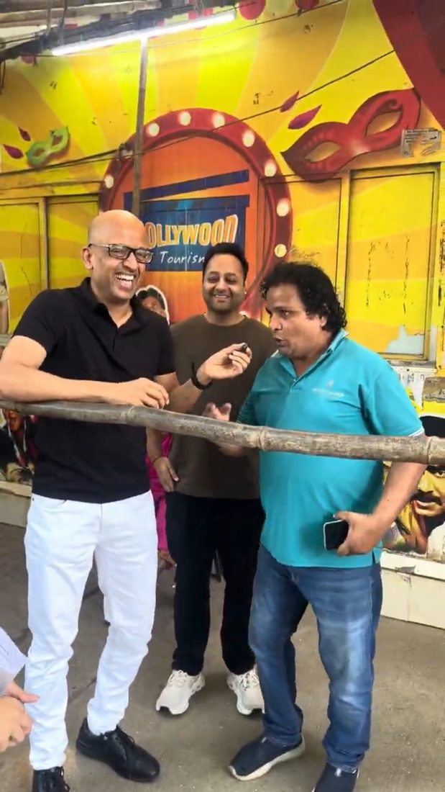
Sir at Goregaon's Film City.
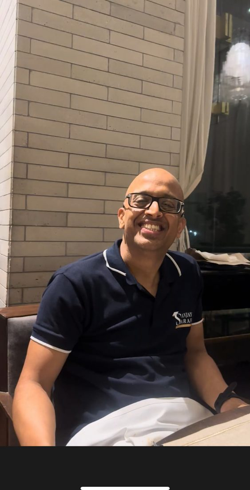
The closing video of the trip: Delhi's favourite against Mumbai's.
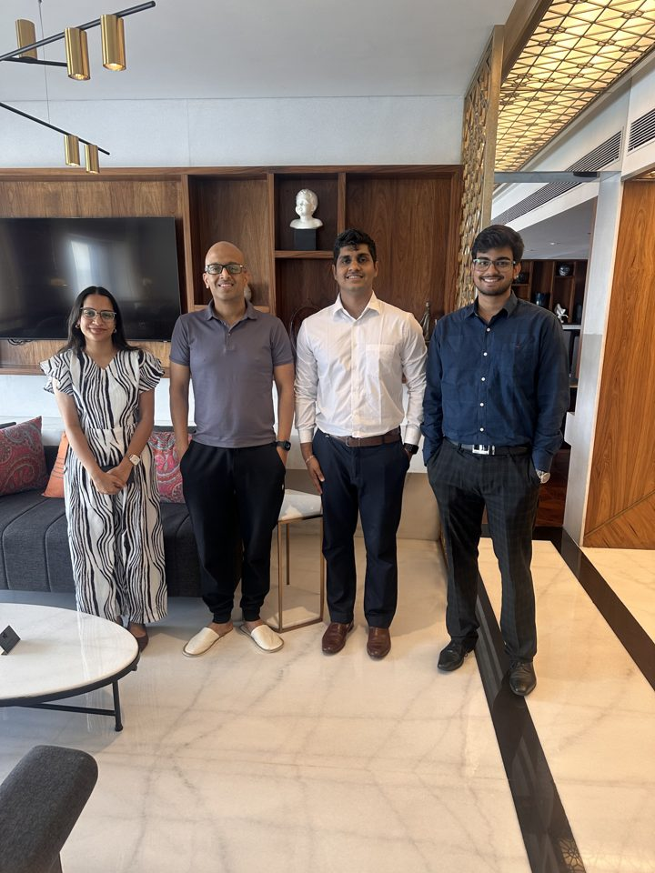
The whole trip in a quick run of pictures.

Our finance quiz, taken to people on the streets of Mumbai.

A new BrokerVogue episode shot in Mumbai.
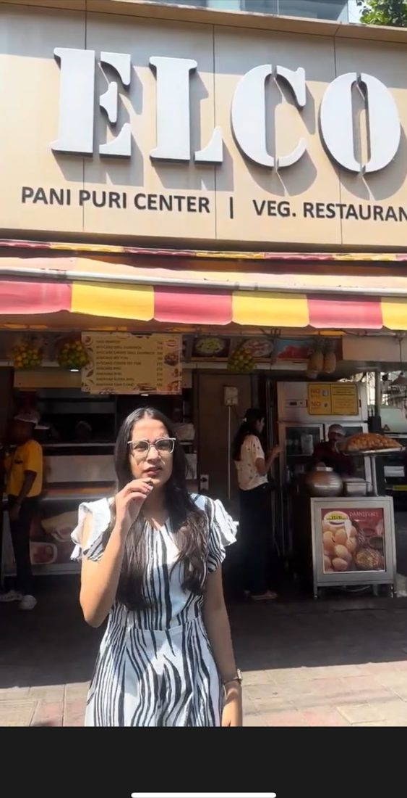
The story of a puchka seller and how the stall makes money.

A woman who runs a stall near Ashok Vada Pav, and how her business works.
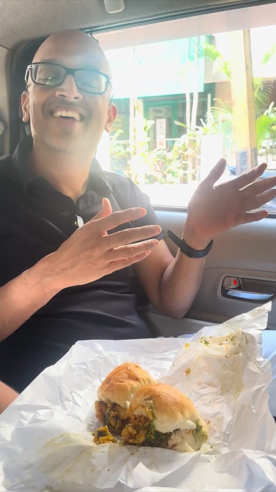
What it costs to make and sell Mumbai's favourite snack, and where the money goes.
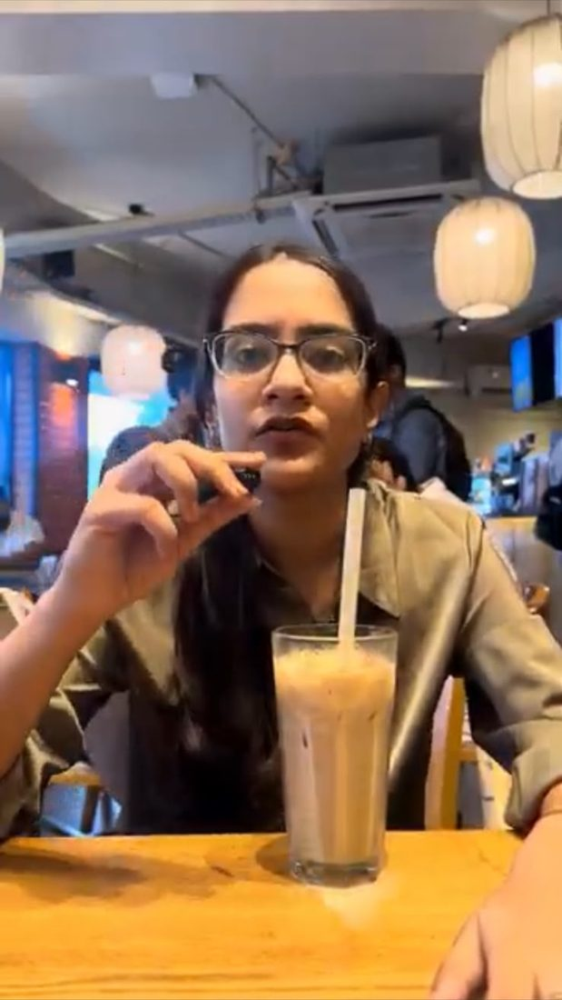
An Irani café against a coffee chain: why the same break costs eight times more.
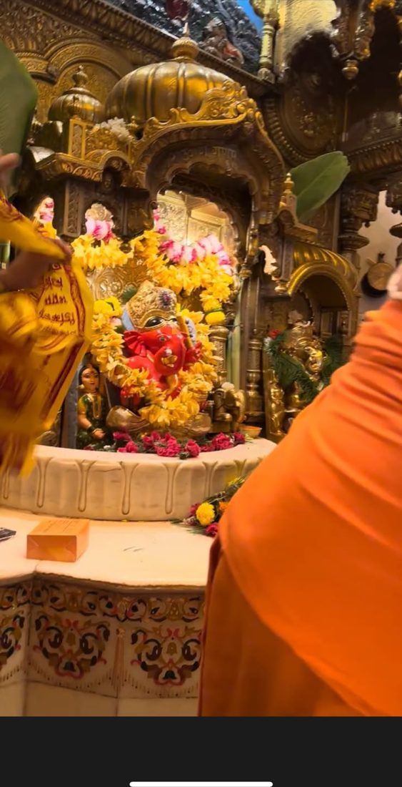
The business that runs around Ganpati.

Three videos on different Dharavi industries, with one or two more to come from the same footage.
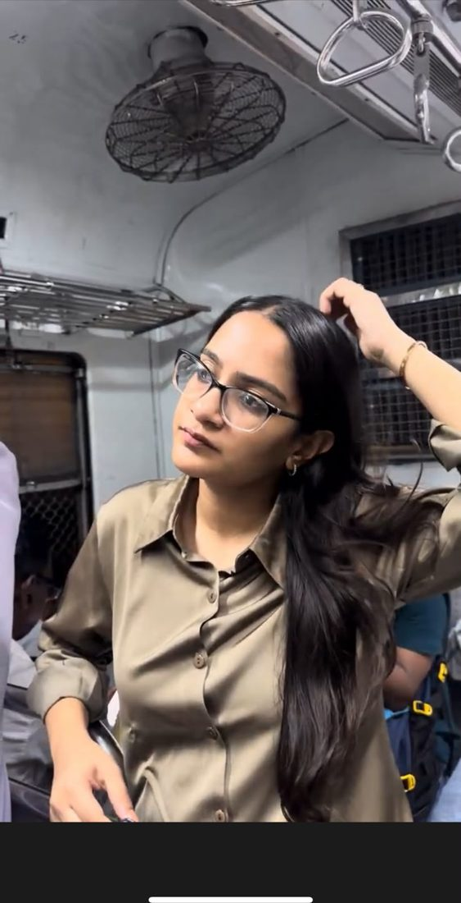
How the local train keeps the city's economy moving.
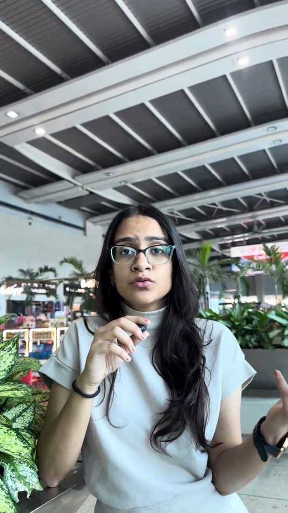
What redevelopment means for the people and the money involved.
What an auto driver earns, spends and keeps in a day.

A three-part series where Vidyut shares his own journey.

Vidyut on what makes a CV work, for our FixMyCV service.

Students go through real interview practice with us.
Meetings
We scouted billboard and hoarding spots near the colleges our students come from, so the Mumbai plan is built on what we saw on the ground.
Mumbai outdoor plan goes to leadership by Thursday, 8 Oct.
We met three of Mumbai's leading PR agencies to see who could take SSEI's story further in the city and nationally.
PR plan for the next quarter, with a look back at last quarter, goes to leadership by Thursday, 8 Oct.
Spend
Every rupee is logged with its receipt in the trip spend sheet.
What we learned
200 sign-ups and a room that stayed for four hours, in a city where we had never held a meetup. There is real demand here, and we now have 200 warm leads to build on.
Around 1 in 3 people who signed up came. That ratio helps us size the venue, the food and the follow-up for the next event.
Dharavi alone gives us 4 to 5 videos, and one vada pav stop gave us three. Picking places that can hold several formats gets more out of every shoot day.
Four fund house leaders agreed to sit down with us in a single week because we were in the city. In-person trips are the fastest way to book senior guests.
We shot 24 videos and 4 podcasts in six days. Getting them out on time depends on editing, which is why the rollout plan comes first.
Ten alumni gave up an evening to meet students. What they say about learning with Sir lands better than anything we could say ourselves.
Next steps